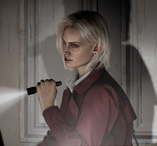
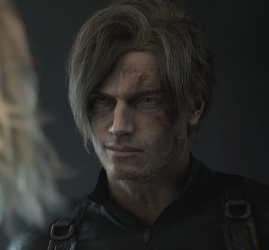
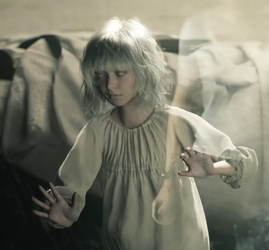

Associates
Alyssa Ashcroft

Alyssa Ashcroft is Grace's adoptive mother. She actually was a playable character in one of Resident Evil's earlier games as an investigative journalist. Unfortunately, her death is in fact the catalyst for this whole game's story, so she doesn't last long.
Leon Kennedy

Leon is a long-standing character in the Resident Evil series, and he returns to be a main character alongside Grace in this game. He plays an important part in the story as he relatively remains stable and acts as a rock for Grace to grow and lean on.
Emily

Emily is a young blind girl Grace finds locked up while she looks for a way out. Determined to not just leave her to die, Grace takes her along to help her get out of this place.
Victor Gideon

Dr. Victor Gideon is the main villain to Grace's story. He's the one who kidnaps her and is directly involved in the murder of her mother.